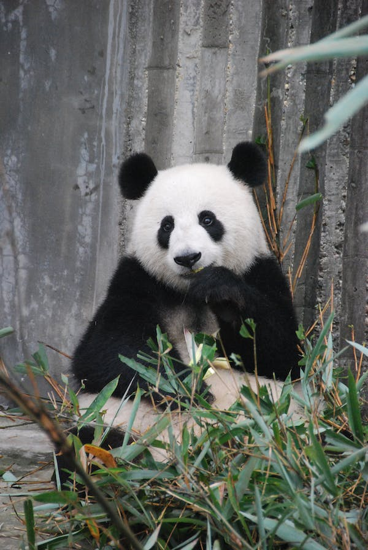

Kingfisher
Kingfishers or Alcedinidae are a family of small to medium-sized, brightly colored birds in the order Coraciiformes. They have a cosmopolitan distribution, with most species found in the tropical regions of Africa, Asia, and Oceania but also can be seen in Europe. They can be found in deep forests near calm ponds and small rivers. The family contains 114 species and is divided into three subfamilies and 19 genera. All kingfishers have large heads, long, sharp, pointed bills, short legs, and stubby tails. Most species have bright plumage with only small differences between the sexes. Most species are tropical in distribution, and a slight majority are found only in forests.
Elephant
Elephants are the largest existing land animals. Three living species are currently recognised: the African bush elephant, the African forest elephant, and the Asian elephant. They are the only surviving members of the family Elephantidae and the order Proboscidea. The order was formerly much more diverse during the Pleistocene, but most species became extinct during the Late Pleistocene epoch. Distinctive features of elephants include a long proboscis called a trunk, tusks, large ear flaps, pillar-like legs, and tough but sensitive skin. The trunk is used for breathing, bringing food and water to the mouth, and grasping objects. Tusks, which are derived from the incisor teeth, serve both as weapons and as tools for moving objects and digging. The large ear flaps assist in maintaining a constant body temperature as well as in communication. African elephants have larger ears and concave backs, whereas Asian elephants have smaller ears, and convex or level backs.

Lizard
Lizards are a widespread group of squamate reptiles, with over 7,000 species, ranging across all continents except Antarctica, as well as most oceanic island chains. The group is paraphyletic since it excludes the snakes and Amphisbaenia although some lizards are more closely related to these two excluded groups than they are to other lizards. Lizards range in size from chameleons and geckos a few centimeters long to the 3-meter-long Komodo dragon.

Giant Panda
The giant panda (Ailuropoda melanoleuca), also known as the panda bear (or simply the panda), is a bear species endemic to China. It is characterised by its bold black-and-white coat and rotund body. The name "giant panda" is sometimes used to distinguish it from the red panda, a neighboring musteloid. Though it belongs to the order Carnivora, the giant panda is a folivore, with bamboo shoots and leaves making up more than 99% of its diet. Giant pandas in the wild occasionally eat other grasses, wild tubers, or even meat in the form of birds, rodents, or carrion. In captivity, they may receive honey, eggs, fish, yams, shrub leaves, oranges, or bananas along with specially prepared food
Tiger
The tiger (Panthera tigris) is the largest living cat species and a member of the genus Panthera. It is most recognisable for its dark vertical stripes on orange fur with a white underside. An apex predator, it primarily preys on ungulates, such as deer and wild boar. It is territorial and generally a solitary but social predator, requiring large contiguous areas of habitat to support its requirements for prey and rearing of its offspring. Tiger cubs stay with their mother for about two years and then become independent, leaving their mother's home range to establish their own.